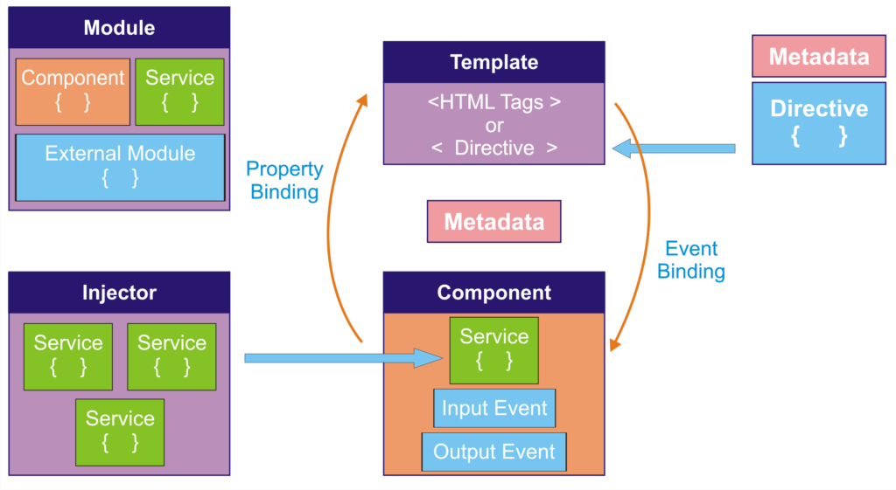
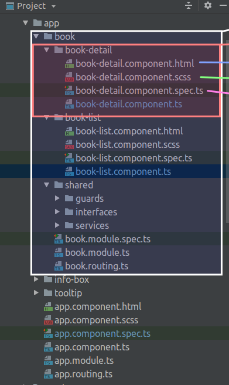

Angular Architektur 1

Angular Architektur 2

weiß: Modul
rot: Komponente
blau: Template
grün: Styles
- dazu später Großartiges!
rosa: Tests
Bildquellen:
- https://www.ngdevelop.tech/angular/architecture/
- https://www.istockphoto.com/de/optionen-und-preise